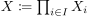
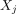
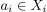
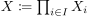
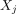
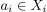
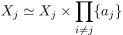

Homeomorphie von einem Faktor eines Produktraums und dem Unteraum des Faktors
1. Satz
Sei  eine Familie topologischer Räume und  das allgemeine kartesische Produkt mit der Produkttopologie.
Dann gilt für ein beliebiges  und  mit
eine Familie topologischer Räume und  das allgemeine kartesische Produkt mit der Produkttopologie.
Dann gilt für ein beliebiges  und  mit  :
:

1